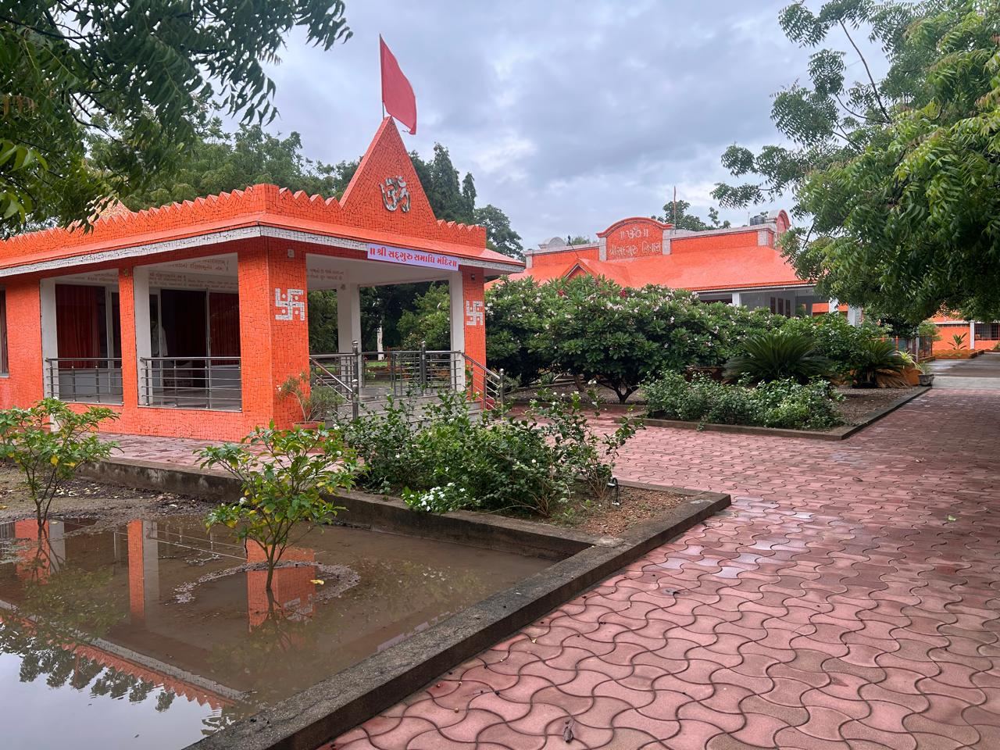
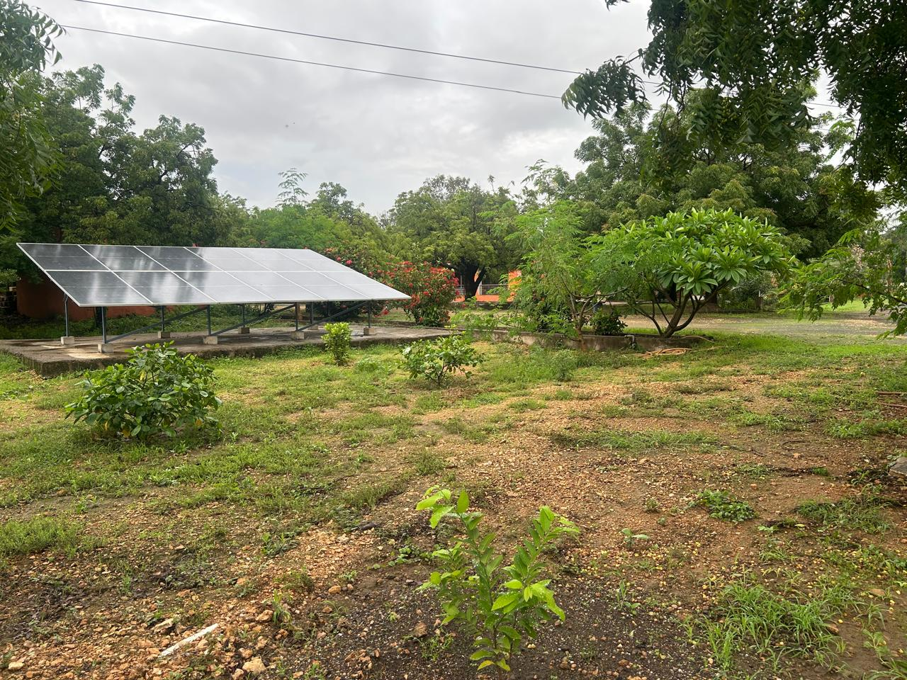
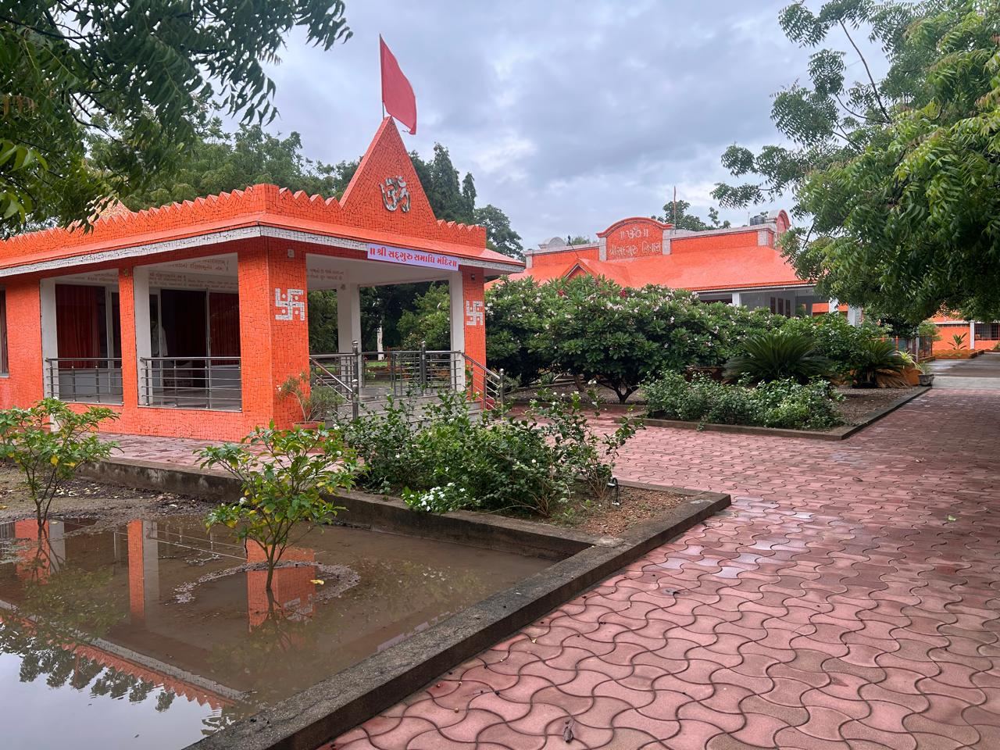
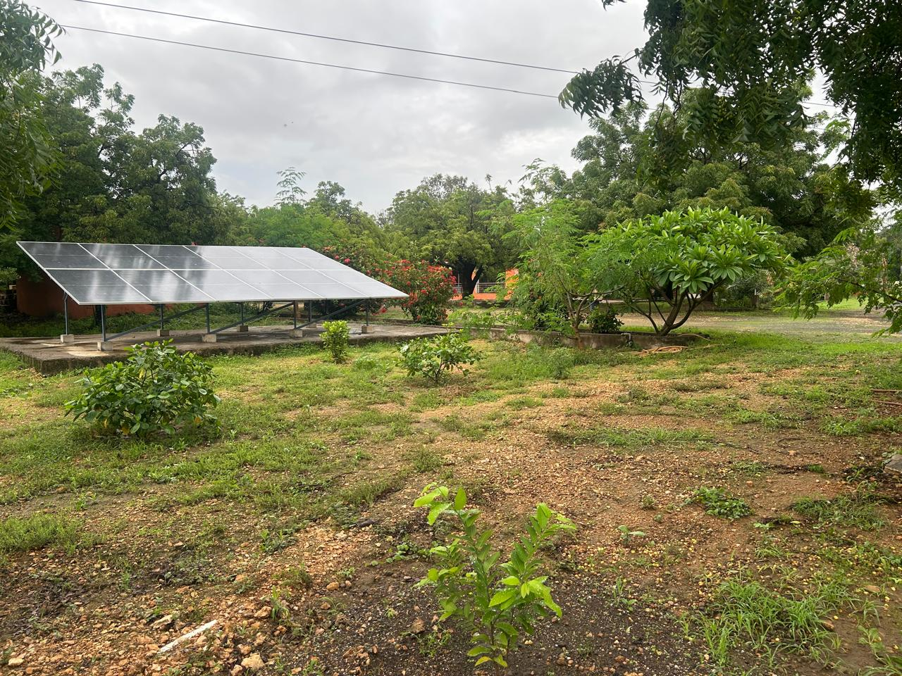
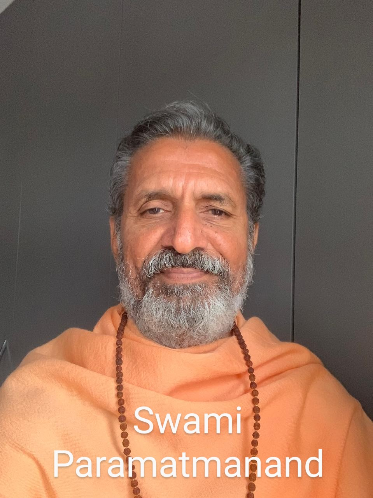
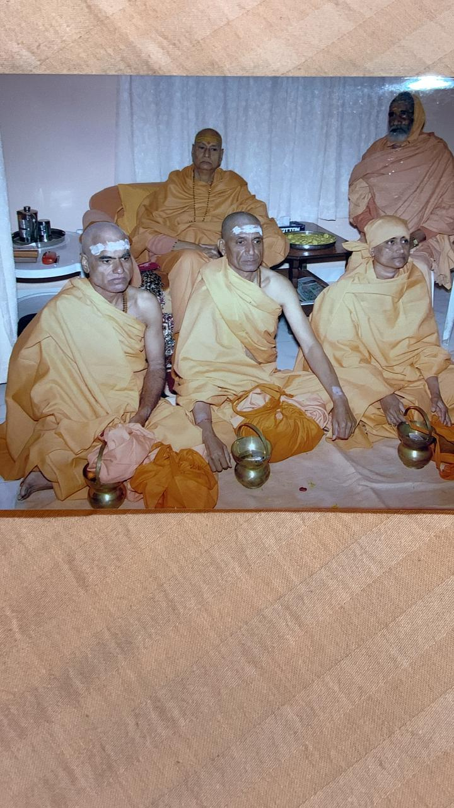
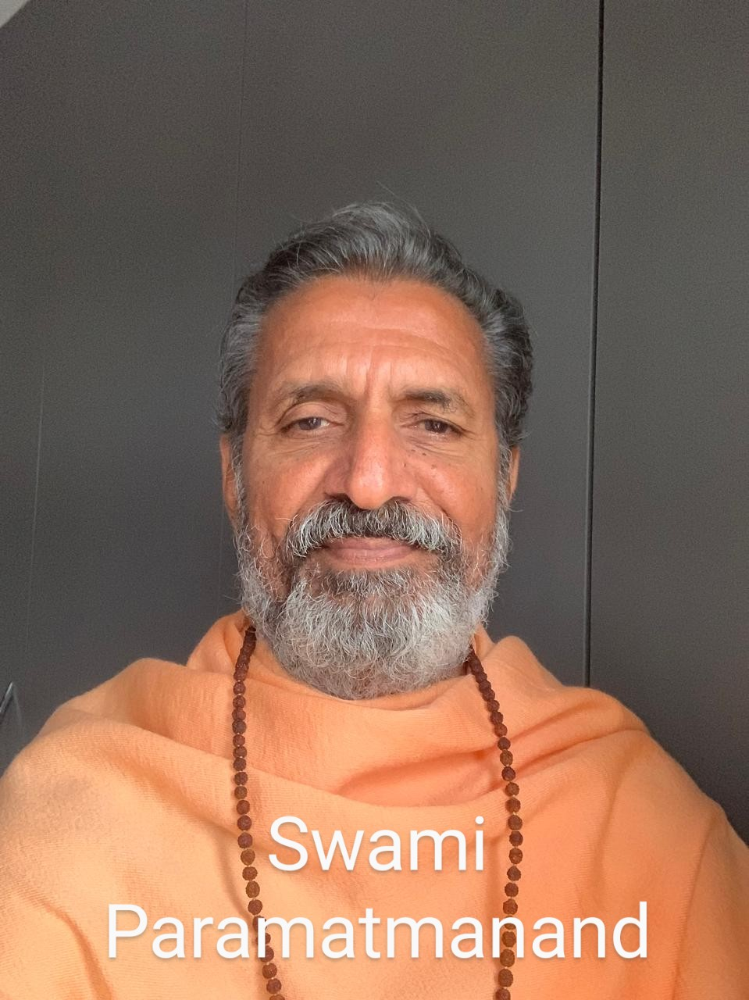
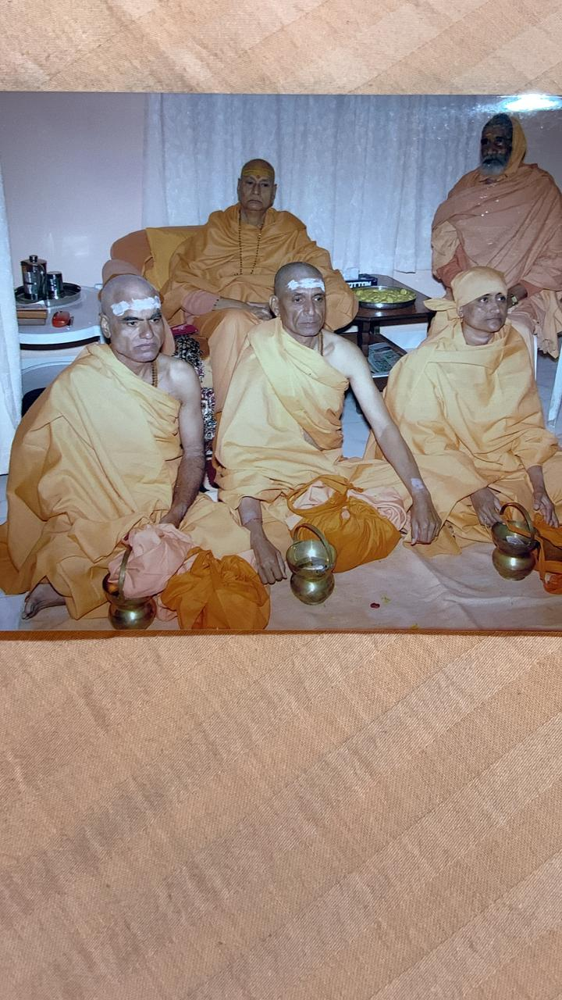

Welcome to Nirvandham Yogashram! Shree Nirvandham Yogashram, nestled in the serene and spiritually rich region of Ranavav, Porbandar, Gujarat, is a sacred sanctuary dedicated to the profound practices of traditional yoga and the pursuit of inner transformation.
The Ashram was established by Brahmalin Swami Shree Bhajanprakashanand Giriji in the year 1983, following a Dashnami Sanyas Parampara. It stands as a beacon for those seeking to deepen their spiritual journey through Vedanta, Meditation, and Mindful living.
Nirvandham Yogashram is primarily established with an aim to spread the message of our Vedic Sanskriti, to teach people about our Darshanas, and to guide interested individuals in the field of spirituality, which is considered our true religion. We particularly follow Vedantic philosophy and Patanjal Yogdarshan, offering a comprehensive approach to holistic well-being and self-realization.
 



 


